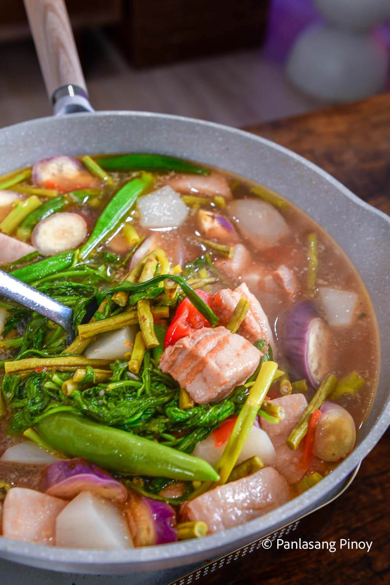

Sinigang na Baboy (Pork Sinigang)

Description
Sinigang na Baboy is a beloved Filipino dish featuring tender pork simmered in a tangy and savory broth. The broth is made with tamarind, tomatoes, and a mix of vegetables like kangkong (water spinach), labanos (radish), and eggplant. This comforting and refreshing dish is perfect for any season and pairs beautifully with steamed rice.
Ingredients
- 1 kg pork belly or ribs (cut into serving pieces)
- 1 onion (quartered)
- 2 medium tomatoes (quartered)
- 1–2 long green chilies (optional, for heat)
- 1 pack of sinigang mix (or 1 cup fresh tamarind paste)
- 6 cups water
- 1–2 tbsp fish sauce (optional, for added umami)
- 1/2 tsp ground black pepper
- 1/2 cup kangkong (water spinach)
- 1/2 cup labanos (radish, sliced)
- 1/2 cup eggplant (sliced)
- 1/2 cup sitaw (string beans, cut into 2-inch pieces)
- 1 small taro (optional, peeled and sliced)
Steps
- In a large pot, combine pork, onion, tomatoes, and water. Bring to a boil.
- Once boiling, lower the heat and simmer for 40-60 minutes or until the pork becomes tender.
- Add the sinigang mix (or tamarind paste) and stir well to dissolve. Season with fish sauce, salt, and pepper to taste.
- Add the labanos (radish) and taro (if using), and simmer for another 10–15 minutes until the vegetables are tender.
- Finally, add the eggplant, string beans, and kangkong. Cook for another 5 minutes until the vegetables are tender but still vibrant.
- Taste the broth and adjust the seasoning if necessary. If you prefer more sourness, add more tamarind or sinigang mix.
- Serve hot with steamed rice and enjoy the refreshing, tangy flavors of this classic Filipino dish!
Back to Home